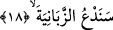

Peygamber Efendimiz (s.a.) namaz kılarken ona uğrar ve “ben bu hareketi yapmanı
yasaklamamış mıydım?” deyince Peygamber Efendimiz ona sert çıkar. Ebû Cehil: “Beni
tehdid mi ediyorsun? Ben şu gördüğün vadide meclisi en kalabalık kişiyim” deyince
şimdi gelecek âyet-i kerime nâzil oldu.
18. Biz de zebânîleri çağıracağız.
Biz de onları çekip Cehenneme sürüklesinler diye azap meleklerini çağıracağız. Bu
meleklerden sâdece bir tanesi onun meclisinde bulunanların bir milyonundan daha
güçlüdür. Nitekim Peygamber Efendimiz (s.a.): “Şâyet Ebû Cehil meclisini çağırsaydı
zebaniler onu açıktan açığa yakalayacaklardı” buyurur.
Hz. Osman’ın mushafına uygun olan Mushaf-i Osmâni’de “sened’u” fiilinin sonundaki
vav yanlışlıkla hazfedilmiştir. Arap dili kurallarına göre hazfedilmesini gerektirecek bir
şey yoktur. Herhalde bu “fel yed’u” emrine karşılık olsun diye hazfedilmiş ve emre
benzetilerek hazfedilmiştir. Çünkü duâ hiç kuşkusuz bir “emir”dir.
İbni Hâlûye İ’rabu’s-Selâsiyne Âyeten adlı eserinde der ki: “Sened’u kelimesinin
aslı vav’lıdır ancak vav sâkin olduğundan kelimenin sonundaki sâkin vav dile ağır gelir.
Onun için mushafta bu vav sakıt olmuştur. Nitekim “sened’u”, “yed’u’l-insânu”,
“yemhu’llâhu el-bâtıla” âyetlerinde de durum böyledir. “Yâ” harfi için de aynı şeyleri
söylemek mümkündür. Nitekim “vâdin-nemli”, “innallâhe le-hâdilleziyne âmenû”
kelimelerindeki ‘yâ’ aynı sebeble düşmüştür. Bütün bunların sebebi az önce ifâde
ettiğimiz gibi yazının nasıl okunuyorsa o şekilde lafız üzerine bina edilmesinden
dolayıdır.
Aslında arapçada “zebâniye” vâlilerin yardımcılarından bir zümre demektir. Onların
yardımcılarına zebani denmesi -Kamus’un beyânına göre- kendilerine tanınmalarına
yardımcı olacak bir alâmet ve bir işâret koymalarından dolayıdır. İşte azap meleklerine
zebani denmesi de onların kâfirleri şiddetle yakalayarak Cehenneme itmelerinden
dolayıdır. Burada zebâniden maksad azap melekleridir. Bu azap meleklerine “şurat”
denmesi yakalamak, şiddetle ezmek ve Cehenneme itmekte bunlara benzemelerinden
dolayıdır. Bazı âlimlere göre zebani kelimesinin tekili zebna şeklindedir. Sanki bu isim
zeben’e nisbeten verilmiş gibidir, sonra zebna zebaniye şekline çevrilmiştir.
Başka bazı âlimlerin ifâdesine göre zebânî kelimesinde ya yerine ta harfi getirilmiştir.
Bundan maksad onların kâfirleri Cehenneme atmalarındaki mübalağayı vurgulamaktır.
Âyette nefs-i emmare Ebû Cehl’ini ve onun, hevadan ibaret olan meclisinde
bulunanları ve zulmânî kuvvetlerini, hızlan narına ve husran cehennemine sürükleyen
celali ve kuvvetli tecellilere işâretler vardır.